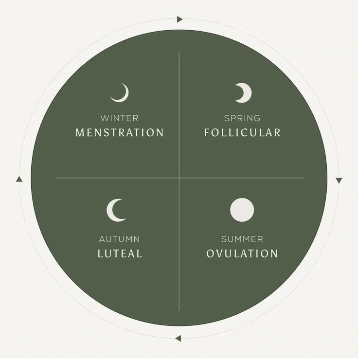

If you’ve ever wondered why some weeks you feel like a productivity queen… and other weeks you want to curl up in a blanket + live on FaceTime + dark chocolate — it’s not “just your mood.”
It’s your hormones.
Welcome to cycle syncing — the wellness trend that’s actually rooted in real physiology (and not just a cute Pinterest graphic).
What is cycle syncing?
Cycle syncing is essentially learning how to work in harmony with your hormones instead of against them.
Your hormones shift every week — and different foods, workouts, and lifestyle tweaks can support you BETTER depending on what phase you’re in.
Imagine aligning your life to your biology.
This is where women often experience more energy, fewer PMS symptoms, more ease with workouts, and an overall sense of alignment.
The 4 Phases — in girl-language:
1) Menstrual Phase (Your “rest + reset” era)
Hormones are at their lowest.
Think: naps, soups, slower mornings.
- best foods: warm stews, mineral-rich broths
- movement: slow stretching + walking
- self-care vibe: grounding + coziness
2) Follicular Phase (Your “new ideas & possibilities” era)
Estrogen rises — you’re naturally more creative + more social.
- best foods: fresh veggies, lighter proteins
- movement: dance workouts, Pilates, sculpt
- self-care vibe: brainstorming queen energy
3) Ovulation (Your “glowy high-energy” era)
Peak estrogen. Libido up. Confidence up.
- best foods: bright colorful foods, fruits, raw veggies
- movement: HIIT, heavier lifts
- self-care vibe: social dates, filming content
4) Luteal Phase (Your “slowing down + inward” era)
Progesterone rises — cravings, water retention, mood changes.
- best foods: root veggies, warming anti-inflammatory meals
- movement: strength but lower intensity
- self-care vibe: boundaries, soft girl productivity
Why this matters:
Because expecting the SAME energy every day is based on a masculine hormone model.
Women aren’t meant to be consistent robots.
We are cyclical.
When you support each phase — your workouts feel better, your digestion feels smoother, your mood feels more stable… and your body feels more understood.
It’s not about perfection.
It’s about alignment.
Want help customizing this to YOUR cycle?
Every woman’s hormones, symptoms, stress load, and lifestyle are different — and your plan should match your body.
If you’d love a personalized cycle-sync plan (foods, supplements, workouts + daily routines that align with your phases), you can book a FREE Wellness Transformation Call with me.
I’ll help you understand what’s going on in your cycle — and create a simple plan you can actually stick to.